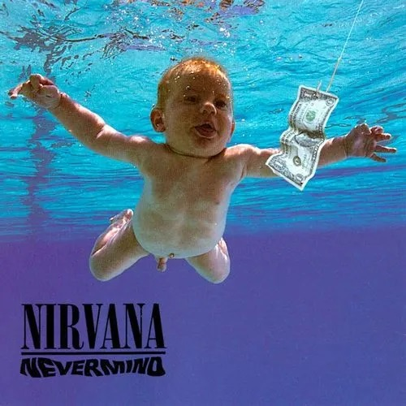

I Nirvana sono una leggendaria band rock americana, fondata nel 1987 ad Aberdeen, nello stato di Washington. Il gruppo è stato creato da Kurt Cobain, frontman e compositore, insieme al bassista Krist Novoselic e al batterista Dave Grohl, creando una musica che ha definito il suono di una generazione negli anni '90. Lo stile della band è spesso associato al grunge, un sottogenere del rock alternativo nato a Seattle. I Nirvana hanno raggiunto fama mondiale nel 1991 con l'album Nevermind e il brano iconico "Smells Like Teen Spirit". La loro musica combinava suoni grezzi e intensi con arrangiamenti melodici e testi profondi, affrontando temi come l'alienazione, il dolore e la ricerca di significato nel mondo moderno. Anche se la band è durata solo sette anni, concludendo la sua storia dopo la morte di Cobain nel 1994, i Nirvana hanno lasciato un segno indelebile nell'industria musicale, diventando un simbolo di un'epoca e un'ispirazione per generazioni di musicisti.